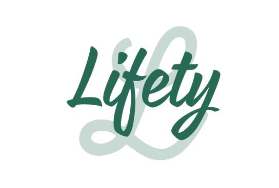

Nuestra idea consiste en una página web dedicada a llevar una vida saludable, a partir de unos pasos a seguir mediante diferentes medios como pueden ser páginas con contenido exclusivo relacionado con noticias y recetas. También foros para comunicarse con otros usuarios dando opiniones o consejos a los demás, estando ésto al alcance de cualquier usuario. Todas las ofertas podrán conocerse gracias a banners de anuncios, con el objetivo de mantener al día a toda clase de público de las mismas, como pueden ser descuentos en la web. También, habrá medios exclusivos como planificaciones relacionadas con la comida y el ejercicio con el objetivo de conseguir hitos. Serán supervisados por un nutricionista mediante interacción directa con el usuario registrado. Además, se podrán solicitar listas de suplementos personalizados que persiguen el objetivo de tener una vida saludable basándose en tres principios: descanso, alimentación y entrenamiento.
¿Quién no quiere estar en forma? Se proporcionarán consejos, mediante todo tipo de contenido, que permitirán guiar a los usuarios, y en especial a los que obtengan una suscripción, con el fin de obtener dichos objetivos. La temática principal de la web será la alimentación apoyándose además en aspectos como el descanso o el entrenamiento. El contenido será creado por profesionales de su campo, que podrán mandar su curriculum a través de un formulario disponible en la página web donde se solicitarán los datos relevantes para que así nuestro equipo especializado pueda corroborar que el solicitante se encuentra al nivel requerido por los estándares de calidad de nuestra web. Medios audiovisuales como pueden ser recetas de los mejores chefs, rutinas de entrenamiento, distintas dietas enfocadas al rendimiento deportivo, a la vida saludable o a cualquier tipo de objetivo.
Cuando accedes a la página desde el buscador, la primera pantalla que sale es la de contenido, dividido en tres grupos: recetas, noticias y rutinas. La funcionalidad de contenido se basa en mostrar a los diversos usuarios información relativa a los ámbitos mencionados con anterioridad, ofreciendo para ello, videos de recetas, textos describiendo ejercicios físicos y noticias relacionadas con el mundo del deporte y la vida saludable.
Cuando accedes a la pantalla de recetas sale un menú compuesto por una estantería con diferentes imágenes. Si seleccionas esa receta accederías a un pop up de un vídeo de YouTube en el que se muestran los pasos a seguir para la realización de la receta seleccionada. Además, existe un filtro facilitando al usuario la selección de la receta buscada.
Algo similar sucede con la pantalla de noticias. Aquí hay una lista de noticias, que al seleccionarlas te redireccionan a la página original de la noticia. Además, hay un filtro en forma de lista de selección para filtrar por fecha o tipo de noticia.
En la pantalla de selección de ejercicio hay una lista con imáganes y descripciones. Cuando eliges el nombre del ejercicio que deseas realizar te redirige a una página con una descripción detallada del ejercicio.
El foro tiene varias entradas por temas. También se puede ordenar o filtrar. Los usuarios podrán crear temas o comentar en temas de otras personas. Para comentar en las conversaciones existe un cuadro de texto en la parte baja, donde se puede escribir lo que se considere oportuno.
El portal se nutre de anuncios, y estos pueden ser cpntratados por externos. Para ello se facilita una sección para poder manejar y contratar los espacios disponibles.
Disponible cuando te registras. En primer lugar, se muestra por pantalla la página principal de "Planificación básica". En esta página vemos que la pantalla está dividida por la mitad en dos seciones:
La primera sección, que se puede observar en la parte de la izquierda, contiene de una lista de selección en la que poder seleccionar diversas dietas acorde a las necesidades específicas de cada usuario (conseguir volumen, bajar de peso, etc). Una vez seleccionada el tipo de dieta la página automáticamente te redirige a una nueva pantalla.
En la pantalla de dietas se muestra una ventana interactiva (al estilo publicación de instagram). En esta publicación se muestra la dieta que toca para hoy, incluyendo desayuno, almuerzo, comida, merienda y cena. El usuario puede usar las flechas para pasar de un día a otro, y así adelantarse para comprar lo que crea oportuno. Además, algunas recetas tendrán un link a nuestro propio contenido de la sección de recetas.
La segunda sección, que se puede observar en la parte de la derecha, contiene un radio button obligatorio para poder elegir el nivel que tiene el usuario. Después hay una lista de selección en la que poder escoger diferentes rutinas en función de la dificultad. Una vez seleccionado el tipo de rutina, la página, automáticamente, te redirige a una nueva pantalla.
En la pantalla de rutinas se muestra una tabla de ejercicios. Con todos los días del mes en la que se especifica qué tipo de ejercicio toca hoy.
Se puede comprar el servicio suscribiéndose para que así el profesional pueda interactuar con los clientes. Como parte de este proceso de interacción se tiene el chat como herramienta básica. Por una parte está la pantalla del usuario, que tiene en la mitad izquierda un chat para comunicase con el personal, y en la derecha un panel con logros. La contraparte, la pantalla del personal de seguimiento es similar. Sin embargio en la mitad derecha tiene una lista de selección para poder cambiar de usuario y otra para añadir logros a un usuario específico. Esta funcionalidad se basa en ofrecer al cliente un contacto directo con un profesional, con el objetivo de realizar un seguimiento al usuario pudiendo conocer los hitos logrados y pasos a seguir para conseguir hitos futuros, realizándose dicho contacto por medio de un chat disponible en la web para aquellos usuarios que paguen el servicio.
En la sección de recomendacion hay un buscador con diferentes filtros. Una vez se han rellenado todos los huecos y le das a buscar, en la nueva pantalla se elige qué tipo de producto queremos. Esta funcionalidad trata de ofrecer al usuario productos de calidad dependiendo del objetivo que éstos busquen. Los productos ofrecidos estarán divididos por categorías siendo éstas: alimentos, utensilios de entrenamiento y suplementos. Al elegir el usuario la categoria, encontrara los diversos enlaces a productos pudiendolos filtrar entre otros ámbitos por el precio.
Al completar las dos etapas sale una estantería con productos recomendados para el usuario.
